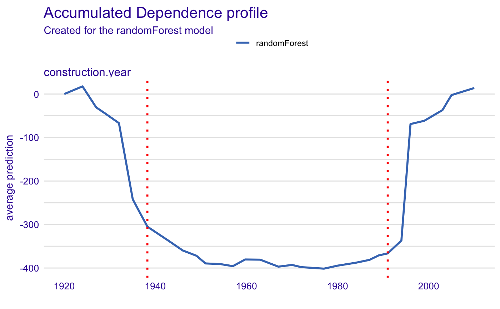

R/safe_extraction.R
safe_extraction.RdThe safe_extraction() function creates a SAFE-extractor object which may be used later for surrogate feature extraction.
safe_extraction( explainer, response_type = "ale", grid_points = 50, N = 200, penalty = "MBIC", nquantiles = 10, no_segments = 2, method = "complete", B = 500, collapse = "_", interactions = FALSE, inter_param = 0.25, inter_threshold = 0.25, verbose = TRUE )
| explainer | DALEX explainer created with explain() function |
|---|---|
| response_type | character, type of response to be calculated, one of: "pdp", "ale". If features are uncorrelated, one can use "pdp" type - otherwise "ale" is strongly recommended. |
| grid_points | number of points on x-axis used for creating the PD/ALE plot, default 50 |
| N | number of observations from the dataset used for creating the PD/ALE plot, default 200 |
| penalty | penalty for introducing another changepoint, one of "AIC", "BIC", "SIC", "MBIC", "Hannan-Quinn" or numeric non-negative value |
| nquantiles | the number of quantiles used in integral approximation |
| no_segments | numeric, a number of segments variable is to be divided into in case of founding no breakpoints |
| method | the agglomeration method to be used in hierarchical clustering, one of: "ward.D", "ward.D2", "single", "complete", "average", "mcquitty", "median", "centroid" |
| B | number of reference datasets used to calculate gap statistics |
| collapse | a character string to separate original levels while combining them to the new one |
| interactions | logical, if interactions between variables are to be taken into account |
| inter_param | numeric, a positive value indicating which of single observation non-additive effects are to be regarded as significant, the higher value the higher non-additive effect has to be to be taken into account |
| inter_threshold | numeric, a value from |
| verbose | logical, if progress bar is to be printed |
safe_extractor object containing information about variables transformation
safely_transform_categorical, safely_transform_continuous, safely_detect_interactions, safely_transform_data
#> #>#>#>library(rSAFE) data <- apartments[1:500,] set.seed(111) model_rf <- randomForest(m2.price ~ construction.year + surface + floor + no.rooms + district, data = data) explainer_rf <- explain(model_rf, data = data[,2:6], y = data[,1], verbose = FALSE) safe_extractor <- safe_extraction(explainer_rf, grid_points = 30, N = 100, verbose = FALSE)#> #> #>print(safe_extractor)#> Variable 'construction.year' - selected intervals: #> (-Inf, 1938.241] #> (1938.241, 1991] #> (1991, Inf) #> Variable 'surface' - selected intervals: #> (-Inf, 47] #> (47, 101.7241] #> (101.7241, Inf) #> Variable 'floor' - selected intervals: #> (-Inf, 5] #> (5, Inf) #> Variable 'no.rooms' - selected intervals: #> (-Inf, 2] #> (2, Inf) #> Variable 'district' - created levels: #> Bemowo, Bielany, Ursus, Ursynow, Praga, Wola -> Bemowo_Bielany_Praga_Ursus_Ursynow_Wola #> Zoliborz, Mokotow, Ochota -> Mokotow_Ochota_Zoliborz #> Srodmiescie -> Srodmiescie